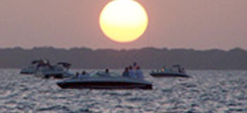
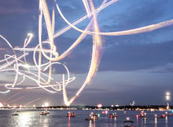

Sponsorship Opportunities
You can build brand awareness and good will for your business by partnering with the Cedar Creek Veterans Foundation (CCVF) to sponsor the spectacular Thunder Over Cedar Creek Lake Air Show. Sponsorships, beginning as low as $250, are available at varying levels to allow individuals and companies to show their support. There is the opportunity for supporters to participate by Sponsoring an Act for the Air Show. We can even tailor a branded marketing package to meet your company’s goals.
Current events
Annual events
JUNE 8TH, 2015
ccvf Golf Classic
The Golf Classic will continue to be held at the Pinnacle Golf and Boat Club , Mabank, Texas. Participants may form a 4-person Team or play individually on this challenging course.Participants will include the general public, former military members and currently serving military members, honored guests. It is expected that special guest George P. Bush and soldiers who were recovering at Brooke Army Medical Center in San Antonio will be attending.
BENEFITING:
The Fisher House | Hope for the Warriors | The Navy Marine Corps Relief Society | Thunder Over Cedar Creek Lake.
July 3RD,
2015
PILOTS PARTY
A great evening of Family Fun! In 2014, the Party was held at the Pinnacle Club with a Luau Flavor and the music of one of our favorite local bands. The purpose of this Party is to allow Air Show supported to meet & greet with pilots, get autographs, take pictures and see exciting videos of planes that will be performing. This is a special family friendly event not to be missed!
Buy Tickets
July 4th,
2015
Thunder Over Cedar
creek lake Air show
Watch the show in comfort from the west shoreline seat at the Pinnacle as well as from various areas around the lake! Limited seating available for our VIP guests. VIP Ticket required for entry into Pinnacle Club.
Listen to the commentary LIVE on KCKL (95.9FM) during the Air Show for all the details on pilots and the planes they fly. There is a continuous feed of information on Twitter to keep folks on the shore or on the water current with the acts performing.
Buy Tickets
Thunder Over Cedar Creek Air Show FREE viewing from boat, local parks, and private property as long as you know, and have permission from, the property owners. There are VIP tickets available via charitable donation of $50 to the Cedar Creek Veterans Foundation (CCVF). VIP seating located on the private shores of Pinnacle Golf & Boat Club. Tickets to the Air Show are required to enter Pinnacle Golf & Boat Club, unless resident or guest of resident.
**DISCLAIMER**
In event of weather conditions that prevent having the air show for safety reasons, no refunds will be made. Attendees will not be allowed to pass through or be seated on private property unless the property owner(s) are present.